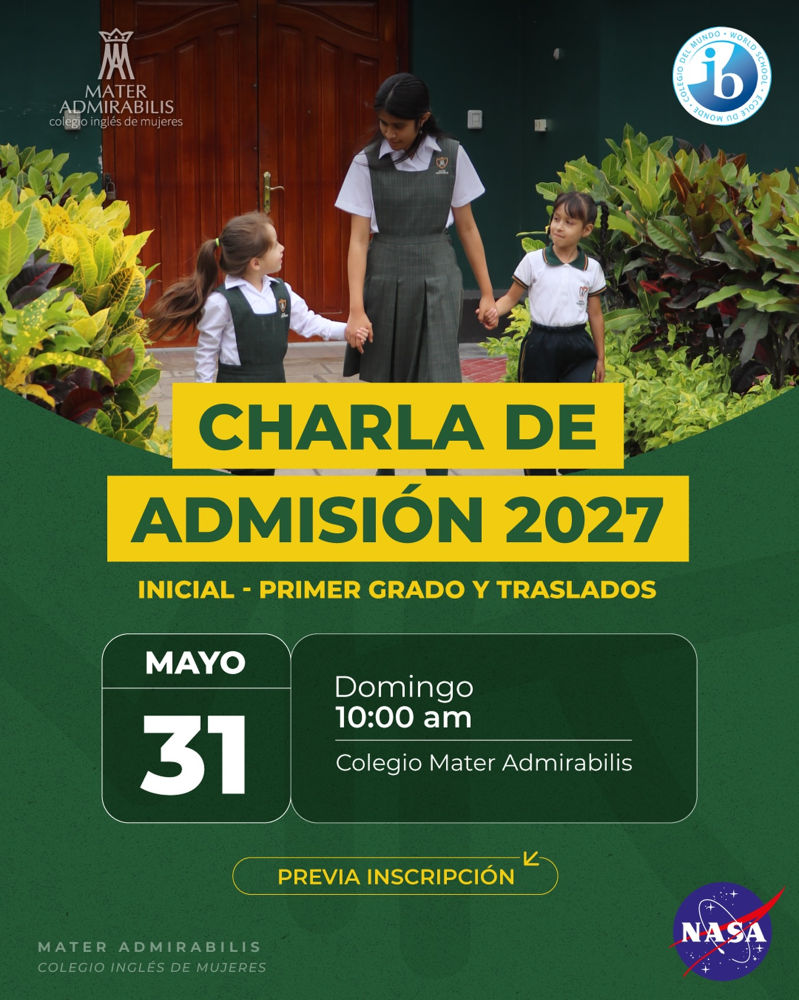

Agradecemos su interés en formar parte de la familia del Colegio Mater Admirabilis. A continuación, le detallamos el procedimiento, requisitos y modalidades para postular al año escolar 2027.

Te invitamos a participar en nuestra charla informativa presencial para los niveles de Inicial, Primer Grado y Traslados. Conoce nuestra propuesta educativa de la mano de nuestro equipo directivo.
Fecha: Domingo 31 de Mayo
Hora: 10:00 AM
Lugar: Auditorio del Colegio Mater Admirabilis
Para postular a las vacantes del nivel de **Inicial (3, 4 y 5 años)** y **Primer Grado de Primaria**, las y los postulantes deberán tener la edad correspondiente cumplida obligatoriamente al 31 de marzo de 2027.
El proceso de admisión definitivo está sujeto a la disponibilidad de vacantes y a la presentación completa del expediente de postulación en los plazos establecidos.
El proceso de postulación por traslado (dirigido a estudiantes desde **Segundo de Primaria hasta Quinto de Secundaria**) inicia en la segunda semana de **Agosto**, sujeto a la disponibilidad de vacantes por aula.
Las estudiantes postulantes por traslado deberán pasar una entrevista de evaluación con la Coordinadora de Inglés para determinar su nivel comunicativo.
En caso de presentar un nivel inferior al estándar del aula, la institución ofrece la alternativa de incorporarse a la **Academia de Inglés**, la cual opera por las tardes en las instalaciones del colegio brindando un soporte exclusivo de nivelación.
Las familias interesadas en iniciar el proceso pueden solicitar el envío digital del **"File del Postulante"** o agendar una consulta a través de nuestros canales directos de atención.